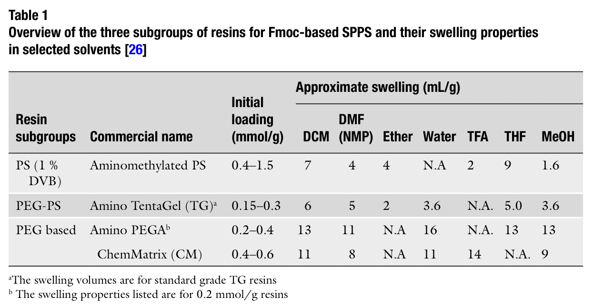
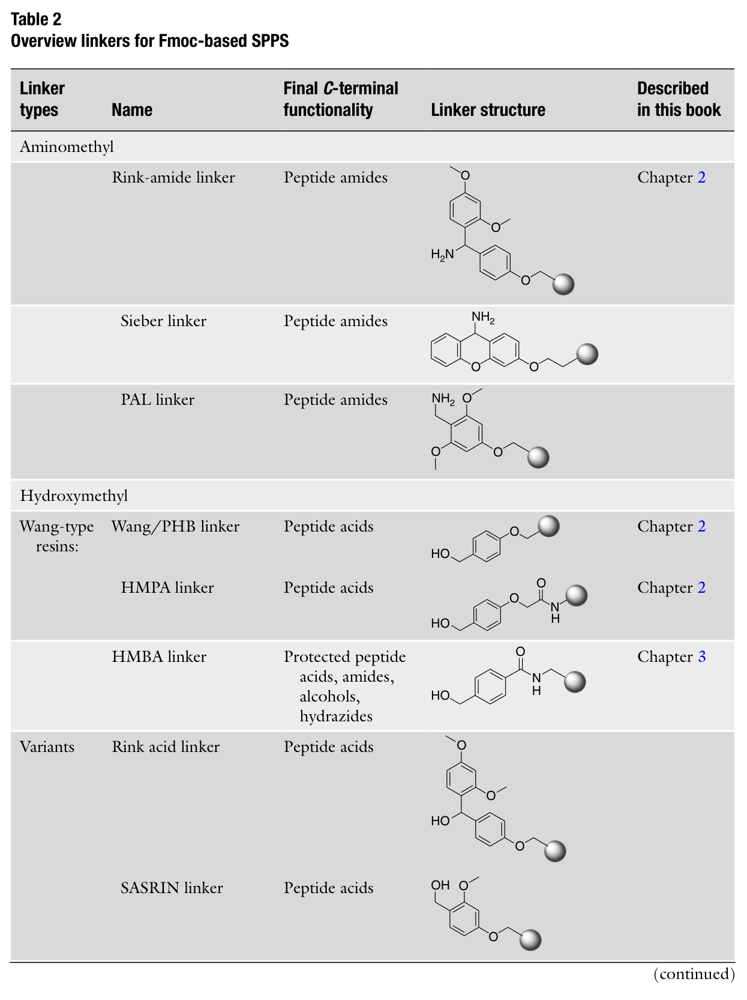
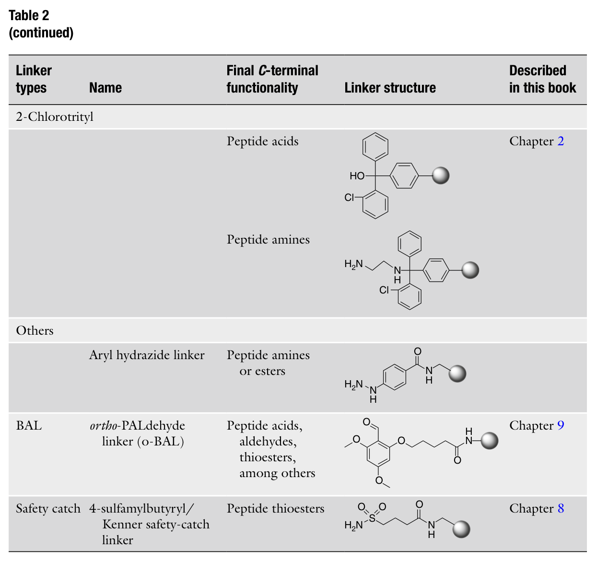
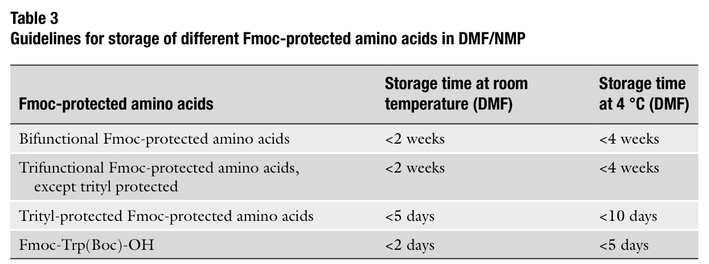
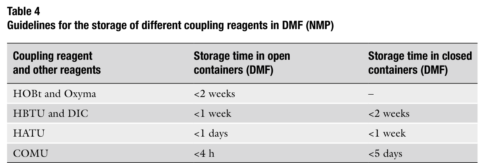
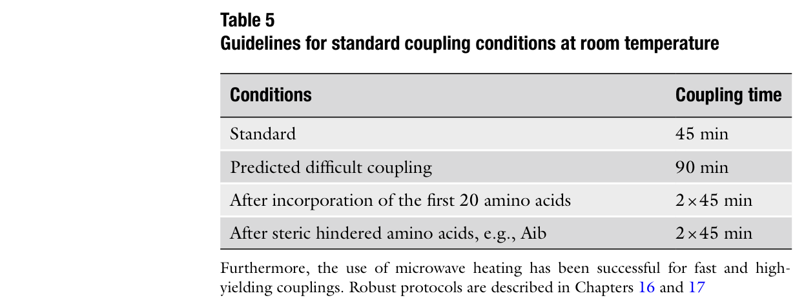

Chapter 2: Linkers, Resins, and General Procedures for Solid-Phase Peptide Synthesis
（树脂、连接子与固相多肽合成通用操作规程）
原文作者：Pernille Tofteng Shelton and Knud J. Jensen
本章描述了以Fmoc为Nα-保护基的固相多肽合成（Fmoc-SPPS）的基本实验规程。内容涵盖树脂及其处理方法、连接子（linker）的选择，以及多肽链延伸的最常用方法。正确选择树脂和连接子是多肽合成成功的关键参数。本章提供了用于合成C端酰胺、C端羧酸等多肽的最常用、最有用的树脂和连接子的综述，并以标准操作规程（SOP）结尾。
关键词：Solid-phase peptide synthesis (固相多肽合成), SPPS, TentaGel, ChemMatrix, PEGA, Polystyrene (聚苯乙烯), HBTU, HATU, DIC, COMU, HOBt, HOAt, Oxyma
在过去几十年中，众多树脂和连接子被开发并商业化，使得SPPS应用范围极为广泛。需要理解两个核心概念：
• 树脂 (Resin)：决定物理性质，如溶胀性（swelling），并可能限制树脂稳定的化学条件和反应类型。
• 连接子 (Linker)：提供肽链与固体支持之间的可逆连接。在大多数情况下，连接子还在合成过程中保护和封锁C端α-羧基。连接子的选择决定了：
合成过程中可使用的化学反应条件
最终释放肽肽所需的切割条件
最终产物的C端功能基团（酰胺、酸、醇、酯等）
Merrifield在1960年代首次使用聚苯乙烯（polystyrene, PS）树脂，这种高效树脂至今仍广泛使用。经过多年发展，出现了含聚乙二醇（PEG）的PS树脂以及纯PEG交联树脂。
SPPS的树脂可分为三大类（见表1）：
（1）经典聚苯乙烯树脂 (Polystyrene, PS)
以1%二乙烯基苯 (DVB) 交联的聚苯乙烯聚合物
负载量 (loading): 0.2–1.2 mmol/g
与DMF和DCM兼容，但不兼容水
适用于短至中等长度肽段的合成
价格较低，是经典选择
（2）PEG功能化聚苯乙烯树脂 (PEG-PS)
代表产品：TentaGel (TG) —— 由Bayer和Rapp开发
通过醚键将PEG (50–70%) 接枝到低交联聚苯乙烯上
在DCM、DMF、NMP、水、乙醇、THF等多种溶剂中均有优异的溶胀性
从有机溶剂转为水相时，建议使用溶剂梯度过渡：DCM → THF或乙醇 → 水
TG树脂经过20多年发展，经过了大量科学研究的验证，是可靠的支持介质
非常适合较长肽段的合成
另有NovaSyn® TG树脂，loading约0.2–0.3 mmol/g
（3）纯交联PEG树脂 (Pure cross-linked PEG)
不含聚苯乙烯成分
PEGA树脂：由Meldal开发，在水中的溶胀极好，可用于与蛋白质（35–70 kDa）的相互作用研究
- PEGA树脂以乙醇润湿状态供应（因为树脂珠粘性大，干燥或收缩时易损坏）
ChemMatrix (CM)树脂：由Albericio等人于2006年报道
- 完全基于PEG，含一级醚键，化学稳定性好
- 比PEGA更易处理（可在干燥状态下操作）
- 溶胀性能优异，有利于扩散和反应位点可及性
- 适用于长肽甚至小蛋白的合成
- 商业来源：PCAS BioMatrix Inc.，Biotage AB，Novabiochem® (商品名NovaPEG)
表1. Fmoc-SPPS三大类树脂及其在选定溶剂中的溶胀性质总览

Table 1. 三大类树脂概述及溶胀性质
关键要点：
PS树脂适用于短至中等长度肽段，价格经济
PEG基树脂在中长肽和含"困难序列"的肽合成中通常优于PS树脂
但PEG树脂价格更高
选择树脂时需综合考虑：肽长度、序列难度、预算
SPPS中的连接子提供肽链与固体支持之间的可逆连接。大多数连接子在TFA处理时释放肽，生成C端酸或酰胺。
连接子类型总览（见表2）：
（A）氨甲基类连接子 (Aminomethyl linkers) → 产物为C端酰胺 (Peptide amides)
Rink-amide linker（最常用）：可通过标准酰胺键偶联连接到氨基化树脂上
Sieber linker：同样生成C端酰胺
PAL linker (Peptide Amide Linker)：可能比Rink-amide具有更高的酸不稳定性
（B）羟甲基类连接子 (Hydroxymethyl linkers) → 产物为C端羧酸 (Peptide acids)
Wang/PHB linker：经典选择，生成C端羧酸
HMPA linker：生成C端羧酸
HMBA linker：可用于生成保护肽酸、酰胺、醇、酰肼等多种C端产物
Rink acid linker：Rink连接子的变体，生成C端酸
SASRIN linker：超酸敏感树脂，生成C端酸
（C）2-氯三苯甲基类 (2-Chlorotrityl) → 产物为C端羧酸或胺
2-Chlorotrityl chloride树脂：广泛用于肽酸合成
优点：首氨基酸上载时不会发生消旋化
特别推荐用于C端为His、Cys、Pro、Met、Trp的肽段
（D）其他特殊连接子
Aryl hydrazide linker（芳基酰肼连接子）：氧化切割，生成C端胺或酯
BAL (Backbone Amide Linker, 骨架酰胺连接子)：通过骨架酰胺连接，C端可自由修饰
- 可合成肽酯、醛、硫酯等
Safety-catch linker (Kenner安全捕获连接子)：用于合成C端硫酯
- 通过磺酰胺的烷基化激活，再用亲核试剂切割释放
表2. Fmoc-SPPS连接子总览（含结构式）

Table 2 (Part 1). Fmoc-SPPS连接子总览——氨甲基类、羟甲基类及变体

Table 2 (Part 2). Fmoc-SPPS连接子总览——2-氯三苯甲基类及其他特殊连接子
本章列出了进行标准Fmoc-SPPS所需的全部材料和试剂：
氨甲基化聚苯乙烯(PS)树脂：高负载(HL, 0.5–1.5 mmol/g)或低负载(LL, 0.3–0.5 mmol/g)
TentaGel® (TG)树脂：标准级(S) ~0.25 mmol/g 或研究级(R) ~0.15 mmol/g
NovaSyn® TG树脂：~0.2–0.3 mmol/g
PEGA树脂：0.2–0.4 mmol/g
ChemMatrix® (CM)树脂：~0.46 mmol/g
二氯甲烷 (DCM)
N,N-二甲基甲酰胺 (DMF)
N-甲基-2-吡咯烷酮 (NMP)
甲醇 (MeOH)
四氢呋喃 (THF)
三氟乙酸 (TFA)
哌啶 (Piperidine)
吡啶 (Pyridine)
乙酸酐 (Acetic anhydride)
DIC (N,N'-二异丙基碳二亚胺)
COMU (6-氯-3-[(二甲基氨基)(吗啉代)亚甲基]苯并三唑-1-碳鎓六氟磷酸盐)
HATU (1-[双(二甲基氨基)亚甲基]-1H-1,2,3-三唑并[4,5-b]吡啶鎓-3-氧化物六氟磷酸盐)
HBTU (1-[(苯并三唑-1-基)二甲基氨基亚甲基]六氟磷酸盐)
HOBt (1-羟基苯并三唑)
Oxyma (乙基-2-氰基-2-(羟亚氨基)乙酸酯)
MSNT (1-(均三甲基苯磺酰基)-3-硝基-1H-1,2,4-三唑)
DIEA (N,N-二异丙基乙胺) —— 最常用的非亲核碱
DMAP (4-(N,N-二甲基氨基)吡啶) —— 催化量的亲核催化剂
MeIm (1-甲基咪唑)
Fmoc保护氨基酸
Fmoc保护五氟苯基酯 (OPfp酯) —— 预活化酯
Fmoc保护假脯氨酸二肽 (pseudoproline dipeptides)
Fmoc保护N-Hmb氨基酸 (α-甲基苄基保护)
Fmoc保护N-Dmb氨基酸 (2,4-二甲氧基苄基保护)
树脂的初始溶胀处理可提高最终肽产率。不同树脂有不同的推荐规程：
适用于氨甲基化树脂和预载羟甲基官能化树脂：
将树脂放入带聚丙烯滤头的注射器中
加入DCM直至完全浸没树脂
抽真空排液，重复DCM处理
用DMF浸没树脂，放置15–30分钟
抽真空去除DMF，树脂即准备好用于合成
⚠ 注意：许多树脂购买时为Fmoc保护形式，需先进行Nα-脱保护！
CM树脂推荐更精心的溶胀以获得更高产率：
用MeOH浸没树脂1分钟
抽真空排液，重复MeOH处理
依次洗涤：DMF (2×1 min), DCM (3×1 min), TFA-DCM 1:99 (3×1 min), DIEA-DCM 1:19 (3×1 min), DCM (3×1 min), DMF (3×1 min)
标准洗涤规程（适用于PS、TG、CM树脂）：
加入DMF（约5 mL/0.5 mmol）到肽树脂中
放置1分钟后抽滤排液
重复3–5次（视先前进行的化学反应而定）
注意：PEGA等特殊树脂可能需要特定的洗涤规程，建议查阅供应商推荐方案。
用DMF充分洗涤（见3.1.3）
用乙醇(3×1 min)和乙醚(2×1 min)依次洗涤
抽真空10分钟
(a) 如下一步是肽切割（见Chapter 3）：室温放置1–2小时
(b) 如下一步是树脂上载量测试（见3.8）：放入干燥器中真空干燥12–18小时
对于氨基功能化树脂，首氨基酸的锚定使用标准酰胺偶联反应。切割后生成C端酰胺。最常用的是Rink-amide连接子。
标准偶联规程见3.5节。
对于羟甲基树脂（切割后生成C端羧酸），推荐使用不含三级碱（如DIEA）的方案，以减少自酰化（双引入）和消旋化。
适用场景：一般羟甲基树脂的首氨基酸上载。
基本原理：将Fmoc-氨基酸（10当量）与DIC（5当量）在DCM中于0°C反应15分钟，形成对称酸酐，蒸除DCM后用DMF复溶，加入到树脂中，再加催化量DMAP（0.1当量）。
将羟基功能化树脂放入干燥烧瓶中，加入干燥DMF完全浸没
溶胀30分钟后抽真空去除DMF
将Fmoc-氨基酸（10当量）溶于干燥DCM（~3 mL/mmol），可加几滴DMF助溶
将DIC（5当量）溶于干燥DCM（~1 mL/mmol），加入到氨基酸溶液中
0°C搅拌15分钟，用氯化钙干燥管防潮。如有沉淀，滴加DMF并继续搅拌10分钟
蒸除DCM，用最小体积DMF复溶后加入树脂
加入DMAP（0.1当量，溶于DMF），室温反应1小时，偶尔摇动
抽滤去除过量试剂，用DMF洗涤(×5)
进行上载量测试（见3.8）
如上载量低于理论值的70%，重复上述操作
⚠ 注意：此方法不适合His和Cys的上载！
适用场景：困难情况，包括易发生差向异构化的氨基酸。
基本原理：使用MSNT（5当量）作为活化试剂，MeIm（3.75当量）为催化剂。
羟基功能化树脂在DCM中溶胀
氮气保护下，将Fmoc-氨基酸（5当量）溶于干燥DCM
加入MeIm（3.75当量），然后加入MSNT（5当量），搅拌至MSNT溶解
用注射器将溶液转移到树脂中，室温反应1小时
抽滤，用DCM洗涤(×3)
进行上载量测试（见3.8）
如上载量低于70%，重复操作
2-氯三苯甲基树脂是羟甲基树脂的优秀替代品，上载首氨基酸时不发生消旋化。
特别推荐用于C端为His、Cys、Pro、Met、Trp的肽段。
在Falcon管中，将Fmoc-氨基酸（1.2当量）和DIEA（5当量）溶于干燥DCM（10 mL/g树脂）
必要时加少量DMF助溶
加入到树脂中，室温搅拌约2小时
洗涤：DCM/MeOH/DIEA (17:2:1) (3×1 min), DCM (3×1 min), DMF (2×1 min), DCM (2×1 min)
进行上载量测试（见3.8）
本章描述三种标准酰胺键形成方法：
(1) 铵盐/磷盐活化法（HBTU/HATU/COMU）
(2) DIC/HOBt法
(3) 预活化酯法（Preformed active esters）
偶联试剂效率排名：HBTU < HATU/COMU
（即HATU和COMU的偶联效率相当，优于HBTU）
为提高效率，可配制氨基酸和偶联试剂的DMF储备液。但需注意其保质期：
表3. Fmoc保护氨基酸在DMF/NMP中的储存指南

Table 3. Fmoc保护氨基酸储备液稳定性
表4. 偶联试剂在DMF中的储存指南

Table 4. 偶联试剂储备液稳定性
关键注意事项：
Trt（三苯甲基）保护的三功能氨基酸在DMF中室温不超过5天
Fmoc-Trp(Boc)-OH极不稳定，室温不超过2天
COMU在开口容器中仅稳定4小时！——建议使用新鲜无水DMF配制
HATU在开口容器中仅稳定1天
储备液中加入HOBt反而会加速分解
降低储存温度（4°C）可延长保质期
氮气保护可延长所有溶液的保质期
引入骨架保护衍生物：Dmb或Hmb衍生物（每6个残基插入一个，疏水区域前插入）
使用假脯氨酸二肽 (pseudoproline dipeptides)
Dmb/Hmb与Pro残基之间至少间隔2个残基
这些特殊衍生物价格较高，且Dmb/Hmb脱保护可能较慢
最常用的偶联方法：
树脂放入带聚丙烯滤头的注射器中
将Fmoc-氨基酸（4当量）和HATU（3.8当量）混合，加DMF（0.1 mmol规模约2 mL，氨基酸浓度0.2 M）
溶解后加入DIEA（7.8当量）
立即将混合物加入到树脂中
室温振荡反应45分钟
抽滤去除过量试剂，DMF洗涤(×4)
可选：进行Kaiser试验检测偶联是否完全
特点：无需碱（无DIEA），可降低消旋化风险。
HOAt比HOBt更有效，但由于潜在爆炸性，商业获取受限。
Oxyma Pure是HOBt的替代品，在多数情况下优于HOBt但不一定优于HOAt。
将Fmoc-氨基酸（5当量）和HOBt（5当量）用最小量DMF溶解
加入DIC（5当量），搅拌20分钟（预活化）
加入到树脂中，室温振荡45分钟
抽滤，DMF洗涤(×4)
可选：Kaiser试验
大多数活化酯（如OBt酯）不稳定，需现配。但五氟苯基酯（OPfp酯）是稳定的预活化酯，可商购获得。
由于价格较高，仅在特定情况下使用。
将Fmoc-氨基酸-OPfp酯（5当量）和HOBt（5当量）用最小量DMF溶解
加入树脂，室温振荡反应45分钟
抽滤，DMF洗涤(×4)
表5. 室温标准偶联条件指南

Table 5. 标准偶联条件指南
注意：微波加热可实现快速高效偶联，详见Chapter 16和17。
偶联反应后，有时需要"封端"（cap）未反应的氨基。三种经典方法均使用乙酸酐：
方法1：
偶联后充分洗涤树脂
加入25%乙酸酐/DMF，体积为树脂高度的3倍
振荡2小时
DMF洗涤(×4)
方法2（快速封端）：
加入25%乙酸酐/DMF，振荡5分钟
加入DIEA（1.5当量），继续振荡30分钟
DMF洗涤(×4)
方法3：
新鲜配制20%乙酸酐、20%吡啶/DMF溶液
加入树脂，振荡2小时
DMF洗涤(×4)
⚠ 注意：在自动化合成中，乙酸酐溶液稳定性低。替代方案使用Z(2Cl)-OSu/NMP:DCM:DIEA。
以上方法也可用于最终肽树脂的N端酰化。
每个偶联步骤后，使用20%哌啶/DMF去除Fmoc保护基。
加入20%哌啶/DMF（约5 mL/0.5 mmol）到树脂中
反应2分钟后抽滤排液
再次加入20%哌啶/DMF，放置15分钟
抽滤，DMF洗涤(×5)
重要提示：
商品化的氨基化树脂或预载树脂需要先进行初始Nα-Fmoc脱保护
长肽序列（25–30个循环后）可延长脱保护时间
含Asp-Xxx（特别是Asp-Gly）序列时，注意天冬酰亚胺 (aspartimide) 副反应
- 可在哌啶溶液中添加0.1 M甲酸或1 M HOBt（或1 M Oxyma）来抑制
- 但只有Asp(OtBu)-(Dmb)Gly-OH二肽能完全阻止天冬酰亚胺形成
测量树脂上可用氨基的量（上载量）：
取出少量树脂样品（足够3×5 mg干燥树脂），按3.1.4干燥
称取3份约5 mg树脂于Eppendorf管中
各加1 mL 20%哌啶/DMF，振荡10分钟
静置5分钟使树脂沉降
从上清液取100 μL，用20%哌啶/DMF稀释至1 mL
以20%哌啶/DMF为参比，在290 nm测定吸光度（A290）
ε290 = 5,800 M⁻¹ cm⁻¹
计算公式：
Loading (mmol/g) = (V × A290) / (ε290 × d × m_sample)
其中：V = 体积(L), d = 比色皿光程(cm), ε290 = 5,800 M⁻¹ cm⁻¹, m_sample = 树脂质量(g)
Kaiser试验用于定性检测树脂上是否还存在游离氨基（即偶联是否完全）。
三种溶液（均稳定，可使用数月）：
溶液1：5 g茚三酮 (ninhydrin) 溶于100 mL乙醇
溶液2：40 g苯酚 (phenol) 溶于10 mL乙醇
溶液3：2 mL 0.001 M KCN水溶液 + 98 mL吡啶
操作步骤：
树脂用DCM洗涤(×2)
取少量树脂珠于Eppendorf管中
各加1-2滴上述三种溶液
混合均匀，120°C加热3-5分钟
树脂珠变蓝色 → 存在游离氨基（偶联不完全）
⚠ 注意：Kaiser试验对N端为Pro残基的肽不适用！
对称酸酐法不适合His和Cys的上载
DMF总量不应超过总体积的10%。加DMF可帮助溶解但会降低反应活性
不建议使用磁力搅拌与树脂配合——磁力搅拌会研磨树脂珠，损坏树脂。建议使用摇床。自动化合成仪通常使用涡旋搅拌或氮气鼓泡
必要时可将Fmoc-氨基酸干燥（用二氧六环反复蒸发）以提高反应成功率
切记去除购买树脂上的Fmoc保护基！
树脂会沉降到管底
由于DMF的性质，必须使用石英或熔融石英比色皿（不能用普通玻璃）
1. 树脂选择三大类：
PS（聚苯乙烯）：经济实用，适合短-中等长度肽
PEG-PS（TentaGel等）：性能更优，适合中-长肽和困难序列
纯PEG（ChemMatrix、PEGA）：最佳溶胀，适合长肽和小蛋白
2. 连接子决定C端产物：
Rink-amide → C端酰胺 (peptide amide)
Wang → C端羧酸 (peptide acid)
2-Chlorotrityl → C端羧酸，无消旋化，适合Cys/His/Pro等
Safety-catch / BAL → 特殊C端修饰（硫酯、醛等）
3. 偶联方法选择：
HBTU/HATU/COMU法：最常用，HATU和COMU优于HBTU
DIC/HOBt法：无需碱，减少消旋化风险
OPfp预活化酯：特定情况使用
4. 储备液稳定性（关键！）：
COMU在开口容器中仅4小时——必须新鲜配制
HATU在开口容器中仅1天
Fmoc-Trp(Boc)-OH室温仅2天
Trt保护氨基酸室温仅5天
所有溶液4°C + 氮气保护可延长保质期
5. 操作要点：
初始树脂溶胀可提高产率
不要用磁力搅拌处理树脂
长肽需要延长偶联和脱保护时间
Asp-Gly序列注意天冬酰亚胺副反应
Kaiser试验不适合N端Pro